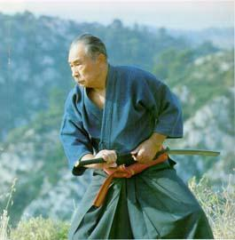

Minoru Mochizuki is one of the direct students of Jigoro Kano (one of the founders of judo), Morihei Ueshiba (founder of aikido ) and Gichin Funakoshi (founder of Shotokan karate). He is the father of Hiroo Mochizuki .
Convinced that martial arts are distorted by their separation into different disciplines and their transformation into sport, his practice sought to assemble the main techniques of the Japanese martial tradition. This is how, in his house in Shizuoka, which was also his dojo: the Yoseikan, he taught Aikido, Judo and Karate.
Yoseikan is frequently visited by martial arts specialists from around the world. In 1963, the year following the death of Jim Alcheik, a French expert, dissensions arose within the technical management of the FFATK. The latter, through Alain Floquet then Émile Blanc (Jim's uncle and co-founder of the FFATK), entrusted Hiroo Mochizuki, an indisputable personality, with its technical direction 1. In 1975 , Hiroo Mochizuki officially founded Yoseikan Budo . In 2000, Minoru officially handed over management of the Yoseikan dojo and the practices taught there to his son.
In the last years of his life, Minoru Mochizuki left for France to live there with his son and Sempai Fabio Martella. Despite the inconveniences of old age, he practiced his passion until the end of his life. He died onMay 30, 2003in Aix-en-Provence surrounded by his son Hiroo and his grandchildren.
Mochizuki and Hisataka Kori shared the same Judo Sensei (Sanpo Toku). Both trained together regularly while stationed in Manchuria during WW2. Hisataka also shared his Karatedo knowledge with Mochizuki. At this time, Hisataka's Karatedo was referred to as Kudakaryu, and was the inspiration of the Yoseikan Budo form, named Happoken.